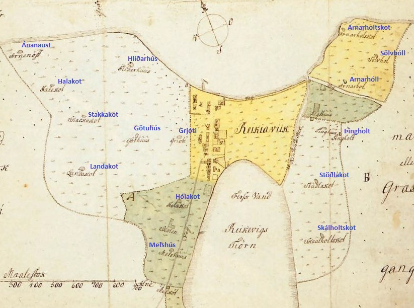

1787
Uppdráttur Rasmus Lievog af Reykjavík frá árinu 1787. Skálholtskot var ein af hjáleigum Víkur (Reykjavíkur). Ekki er ljóst hvenær byggð hófst þar, en samkvæmt Jarðabókinni 1703 er þar talinn einn ábúandi og heimilismenn aðeins fjórir. Kvikfénaður er þá þrjár kýr, níu ær, þrír veturgamlir sauðir og átta lömb. Bæjarhúsin stóðu þar sem nú eru gatnamót Laufásvegar og Skálholtsstígs. Land Skálholtskots var að mestu lagt undir kaupstaðarlóð Reykjavíkur árið 1792 og að fullu undir lögsagnarumdæmið árið 1806.
Á norðausturhorni Skálholtsstígs og Laufásvegar var Norðurbærinn sem stóð lengst Skálholtsbæjanna, eða nokkuð fram á 20. öld. Bær þessi var síðast notaður til að vista geðveikt fólk, var deild frá Kleppsspítala og nefndur Litli-Kleppur. Ofar í lóðinni var á þriðja áratug 20. aldar reist steinhús sem enn stendur við Laufásveg 13. Handan götunnar, þar sem nú er bílastæði merkt Laufásvegur 15, var byggt timburhús laust fyrir aldamótin 1900 þar sem síðasti torfbærinn sem tilheyrði Skálholtskoti stóð.
